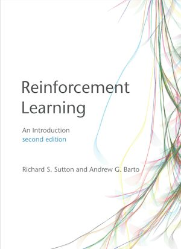
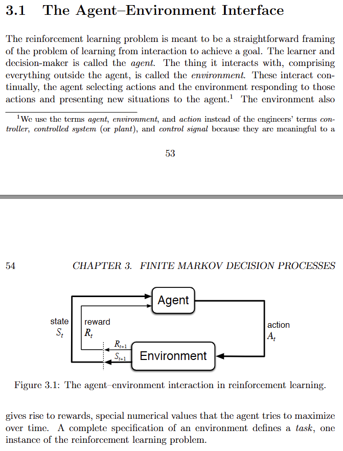
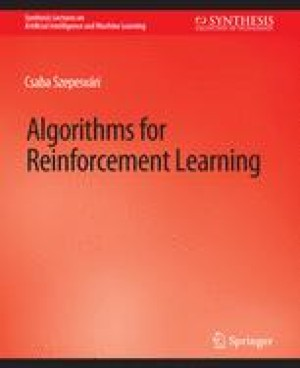
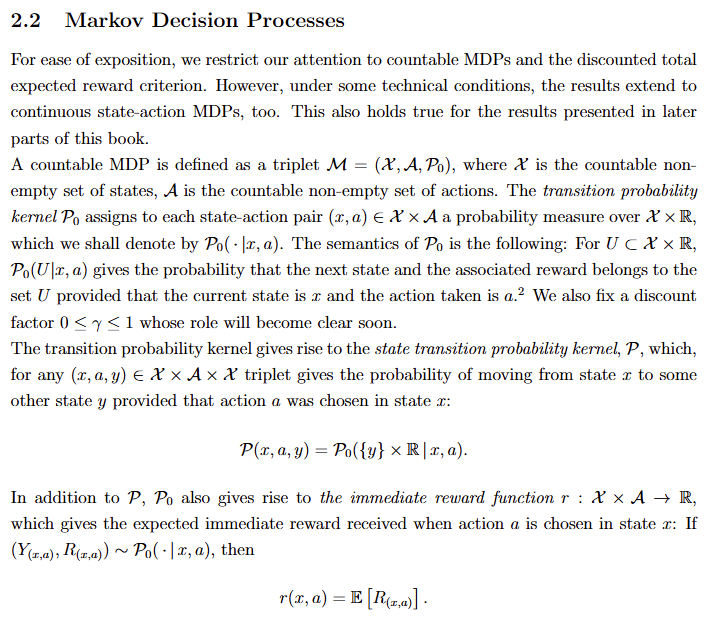
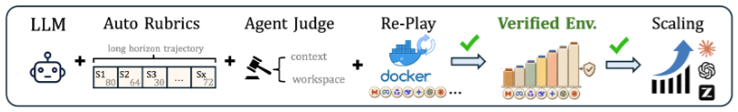
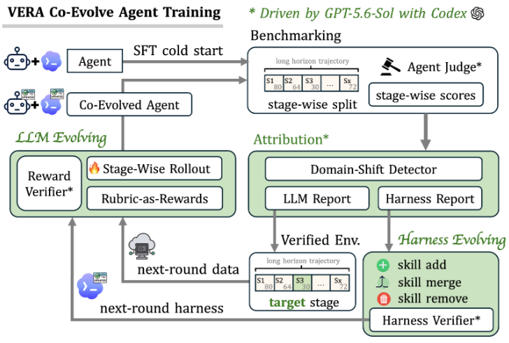

· Agents & learning
Gold Medals Don't Stack Batteries: Building Training Grounds for AI Agents
Why this mattersAn agent can improve only if its practice environment rewards the work we actually need done. Reliable feedback is what connects impressive answers to useful actions.
The promise behind AI, and especially recursive self-improvement, is a system that learns from its own attempts: a programmer that becomes a better programmer, a researcher that builds better experiments, eventually a generalist that can carry a job through to completion. Where does the measuring stick hang now?
In competitive programming, remarkably high. At the 2025 ICPC World Finals, OpenAI's system solved all 12 problems; Google DeepMind's Gemini Deep Think solved 10 of 12, reaching gold-medal level. OpenAI used a separate Local Judge experiment with the same problems and test data. University teams had three students sharing one computer, no internet access, limited reference notes, and five hours. [1, 2] NVIDIA then reported 535.4 out of 600 on the IOI 2026 problems for a competition-specific Nemotron-3-Ultra-CC system with iterative feedback, above the top human score of 498.27. [3]
Research mathematics is moving at a neck-breaking pace. What took humanity centuries is now condensed into hour-long sessions by agents bringing long-standing “lighthouse” problems down like dominoes. OpenAI's math repository collects model-produced manuscripts and proof artifacts; the reported procedure used an average of three hours of thinking compute per result. [4]
Coding and mathematics are useful, but you can't have a nontrivial automorphism for dinner, and a programming medal doesn't align an electrode stack (yet).
A factory gives feedback very differently
Consider battery stacking. A useful system has to combine camera observations, distance measurements, vacuum readings, motion commands, and alignment checks. It needs to recognise an electrode edge, pick the sheet without damaging it, place it within tolerance, and notice when the pickup did not work. These are long-horizon, messy workflows, and one mistake can invalidate the entire workflow. Agent performance on long tasks is also the subject of METR's task-horizon study. [5]
This is also a hierarchy of timescales. Camera acquisition and machine control can run far faster than a language model should be asked to deliberate. The agent's job could be to select a procedure, diagnose an abnormal run, or propose a correction; fast controllers still execute bounded motions and enforce machine interlocks.
Also, LLMs are far from data-efficient learners. Nastase and colleagues note that modern models train on orders of magnitude more language input than humans receive. [17] In lieu of better learning algorithms, one solution is more training, which requires an environment for that purpose.
Reinforcement-learning environments
An environment specifies what the agent can observe, which actions are possible, how those actions change the situation, and how success is scored. Sutton and Barto's agent–environment loop and Szepesvári's Markov decision processes already describe the core interaction. The modern packaging adds containers, tool APIs, files, and execution traces. [6, 7]
One distinction matters: the agent's observation is not necessarily the full state. A photograph may hide a misaligned lower electrode; a successful tool response may not establish that a downstream file is valid. A Markov model assumes the state contains what is needed to predict the next transition. Real agents often have to infer that state from incomplete observations and history.
Textbook formulation

Sutton & BartoReinforcement Learning: An Introduction

SzepesváriAlgorithms for Reinforcement Learning
For a tool-using agent, it is helpful to define the environment contract before choosing a training algorithm.
- Initial state
- The exact files, material batch, calibration, and machine configuration at the start.
- Observations and tools
- The readings the agent can access and the bounded actions it can request. Permissions are part of the experiment.
- Task and budget
- A concrete outcome, tolerances, and limits on time, actions, or compute.
- Reset
- A way to restore the same starting conditions without carrying accidental advantages into the next attempt.
- Evidence and scoring
- Independent checks of the resulting state, alongside a trace explaining how it was reached.
Gymnasium, the Farama Foundation's Python library for reinforcement-learning environments and successor to OpenAI Gym, makes part of this contract explicit through observation and action spaces, reset(), and step(action). Reset returns the first observation; step returns an observation, reward, termination and truncation flags, and auxiliary information. Reaching the goal and exhausting a time budget are different endings. [8]
What changes when the agent learns?
The environment supplies experience. The learning procedure decides what persists from it. That persistent change can live in two places.
Inside the model: training changes its weights. R2E-Gym builds executable software tasks with hybrid verification to train coding agents. On-policy distillation instead trains a student on its own generated sequences using feedback from a teacher, addressing the mismatch between practising on teacher answers and generating its own at deployment. These are different ways of using experience, not interchangeable names for running a test suite. [9, 10]
Around the model: the harness changes what is stored, retrieved, called, and checked. Reflexion keeps verbal feedback in memory for later attempts; Voyager builds a library of executable skills; DSPy optimises language-model pipelines against a metric. A saved procedure can improve an agent without changing the underlying model weights. [11–13]
Meta-Harness goes further by searching over the harness code itself, using previous candidates, scores, and execution traces. Lee and colleagues report a 7.7-point improvement on their online text-classification comparison with four times fewer context tokens, plus results on maths retrieval and agentic coding. It is a reason to measure the complete system: the same model can behave differently when its surrounding software changes. [14]
COS-PLAY, from Xiyang Wu and colleagues, couples a decision agent with an evolving skill bank. Skills are extracted and refined from rollouts, while the decision agent learns to retrieve and use them. Its experiments span six game environments. That gives a concrete example of joint improvement, with demonstrated scope in games rather than battery manufacturing. [15]
A benchmark can supply tasks, tools, and executable checks; using it for training additionally requires a loop that turns attempts and feedback into updates. Evaluation needs separate, held-out tasks. Repeatedly adapting to the same cases can produce a very competent specialist in that particular test suite.
VERA turns recorded work into a place to practise
The October 2026 VERA preprint constructs restartable environments from benchmark trajectories, workspace state, and tool specifications. Generated binary rubrics attach scores to observable evidence. A judge inspects execution and artifacts; container replay checks that the task actually runs. Executable failures override favourable judge scores. Only admitted environments enter the training bank. [16]

Its co-evolution loop attributes failures to model stages or harness skills. Model updates use verified rubric rewards; harness edits face paired development runs with the model frozen. Updates alternate, and rejected candidates do not replace the accepted system. Stage-wise evaluation helps locate failures; end-to-end evaluation checks the complete workflow. The reported gains concern automation and medical-research benchmarks. [16]

An agent may propose its next skill or training stage, while independent execution decides whether the change helps. Keeping a record of rejected and accepted changes makes the improvement process inspectable.
Learning rewards from near-misses
RoboReward (January 2026) tackles a specific data problem. Robot demonstration datasets contain many successful runs and too few failures to train a reliable judge. Lee and colleagues generate negative examples by changing the task description of a successful video and cutting videos short to represent partial progress. Their released 4B- and 8B-parameter reward models learn from successes, failures, and near-misses. The 8B model also improves policy learning in real-robot RL compared with Gemini Robotics-ER 1.5 rewards, although human-provided rewards remain better in that experiment. [18]
For electrode placement, near-misses are particularly useful. A sheet can reach the correct destination but be rotated, shifted, folded, or picked up together with another sheet. A training set could pair camera clips with independently measured alignment and pickup outcomes. Visual feedback would help classify the failure; the acceptance criterion would still come from the measurements. A final photograph alone cannot establish the alignment of layers hidden beneath the top sheet.
Hack-Verifiable Environments (May 2026) makes the scoring problem testable. Roth and colleagues deliberately insert exploitable reward shortcuts into TextArena environments, with deterministic checks that identify whether an agent uses them. Their open-source testbed measures reward hacking directly instead of relying on retrospective judgement of a suspicious trajectory. [19] A manufacturing adaptation could include an editable success report alongside protected sensor records, or an apparently favourable but outdated camera frame. The test would record whether the agent accepts the shortcut, requests fresh evidence, or stops.
Recovery needs its own training data
FLARE (CVPR 2026) separates errors that permit a retry from failures that require the scene to be reset. Its training demonstrations include perturbed robot poses and bridging motions, so a vision-language-action policy learns to resume after execution deviates from the successful trajectory. For larger failures, offline video analysis identifies broken task states and guides the collection of object-specific reset skills. An online multimodal monitor then chooses between continuing the task and invoking a reset skill. [20] In a stacking cell, a missed pickup may permit another attempt; a dropped or damaged sheet may require removal and a verified restart. Those are different recovery tasks and need different examples.
REVOLVE (September 2026) puts correction, reset, and retraining into one real-robot loop. Its four tasks include sorting workpieces, throwing paper, pouring water, and ringing a bell. Each starts with 100 demonstrations; subsequent rounds add successful runs and failure-correction trajectories. Across five iterations, average task success rises from 40% to 58.5%, an increase of 18.5 percentage points. The reset policies succeed in 98% of 200 trials. In the authors' human-effort comparison, data collection falls from 8.89 to 0.50 hours and deployment testing from 2.67 to 0.13 hours. These results concern their four configured tasks, with task-specific reset policies generated and manually refined beforehand. [21]
Resetting is therefore part of the training infrastructure, with its own failure rate and labour cost. For a sheet-handling experiment, each episode should record recovery success, reset time, discarded sheets, and operator interventions. An agent that improves pickup success but doubles the time needed to restore the cell may make training more expensive. Reset failures should also be recorded separately from failures of the task policy.
Building and testing a manufacturing environment
NVIDIA's July 2026 Isaac GR00T development workflow provides a concrete implementation route. Isaac Lab-Arena hosts the scene; teleoperation produces demonstrations; recordings are converted into LeRobot format; GR00T is post-trained and evaluated in closed-loop rollouts. The tutorial uses 400 demonstrations for its example and tunes the visual components and action model while freezing the language model. It also distinguishes a one-episode smoke test from a success-rate estimate over 100 or 1,000 complete episodes. [22] An electrode-handling version would need its own sheet mechanics, vacuum behaviour, sensors, and tooling; the available robot workflow supplies the software structure.
A first environment could focus on one sheet and a small set of controlled pickup and placement faults. The table below is a proposed test design, rather than a result reported by these projects. Tolerances and permitted motions would come from the test cell's configuration.
| Episode condition | Expected response | Independent check |
|---|---|---|
| Normal pickup and placement | Complete the cycle without unnecessary recovery | Pickup confirmation and measured final alignment |
| No sheet on the gripper | Inspect and retry within the configured attempt limit | Vacuum trace and fresh camera observation agree |
| Double pickup or damaged sheet | Reject the sheet or stop for intervention | Sheet count or inspection confirms the fault; no invalid placement is accepted |
| Delayed image or incorrect calibration | Refresh observations or request recalibration | Sensor timestamps and calibration state, kept outside the agent's editing permissions |
RoboDojo (July 2026) offers a model for evaluating the resulting policy across environments. It brings together 42 simulation tasks, 18 real-world tasks, and 30 integrated policies. The simulation suite explicitly tests generalisation, memory, precision, long-horizon execution, and open-vocabulary instructions. Its real-world evaluation system standardises hardware, resets, deployment, and the evaluation protocol. [23] For manufacturing, the corresponding test split could withhold material batches, lighting conditions, and fault combinations, then repeat selected cases on a test stand. Simulation and physical results should be reported separately.
That produces a concrete comparison between the original policy, a revised harness around the same model, and a retrained model using the original harness. Accepted placements per hour, false acceptance of defective sheets, material loss, and intervention time would decide which changes are useful. These 2026 projects make several parts of that experiment available today; matching the environment and its checks to an actual electrode process remains the engineering work.
References
- ICPC. OpenAI's 2025 ICPC experiment. Organiser account, including differences from championship constraints.
- Google DeepMind. Gemini achieves gold-medal level at the ICPC World Finals, September 2025.
- Ficek et al. Post-Training Language Models for Gold-Medal Performance in Coding Competitions, September 2026. Competition-specific system and prospective IOI evaluation.
show all 23 referencesshow fewer references
- OpenAI. Mathematical manuscripts and supporting proof artifacts. Repository distinguishes formalised and unformalised results.
- Kwa et al., METR. Measuring AI Ability to Complete Long Tasks, March 2025. Methodology explainer.
- Sutton & Barto. Reinforcement Learning: An Introduction, second edition, 2018, §3.1.
- Szepesvári. Algorithms for Reinforcement Learning, 2010, §2.2.
- Farama Foundation. Gymnasium: Create a Custom Environment. Interface and environment design.
- Jain et al. R2E-Gym: Procedural Environments and Hybrid Verifiers for Scaling Open-Weights SWE Agents, 2025.
- Agarwal et al. On-Policy Distillation of Language Models: Learning from Self-Generated Mistakes, ICLR 2024.
- Shinn et al. Reflexion: Language Agents with Verbal Reinforcement Learning, 2023.
- Wang et al. Voyager: An Open-Ended Embodied Agent with Large Language Models, 2023.
- Khattab et al. DSPy: Compiling Declarative Language Model Calls into Self-Improving Pipelines, ICLR 2024.
- Lee et al. Meta-Harness: End-to-End Optimization of Model Harnesses, March 2026.
- Wu et al. Co-Evolving LLM Decision and Skill Bank Agents for Long-Horizon Tasks, April 2026.
- Liu et al. VERA: Scaling Verifiable Environments for Agentic co-Evolution, 5 October 2026, preprint. Figure excerpts; §2 and Appendix E.
- Nastase et al. Unifying the structures of language in a neural population code, Neuron, 2026. Author PDF, p. 11, on language-input volumes in LLMs and humans.
- Lee et al. RoboReward: General-Purpose Vision-Language Reward Models for Robotics, January 2026. Dataset, negative-example construction, reward models, and real-robot RL comparison.
- Roth et al. Hack-Verifiable Environments: Towards Evaluating Reward Hacking at Scale, May 2026. Code.
- Zhao et al. FLARE: A Failure-Aware Framework for Autonomous Correction and Recovery in Visual-Language Robotic Manipulation, CVPR 2026. Retry demonstrations and reset-skill pipeline.
- Liu et al. REVOLVE: An Automated Closed-Loop Framework for Evolving Robot Manipulation with Minimal Human Intervention, September 2026, preprint. Tables I–III and §IV-C.
- Llontop & Neel, NVIDIA. Develop Humanoid Robot Policies End-to-End with NVIDIA Isaac GR00T, 7 July 2026. Demonstration collection, post-training, and closed-loop evaluation workflow.
- Chen et al. RoboDojo: A Unified Sim-and-Real Benchmark for Comprehensive Evaluation of Generalist Robot Manipulation Policies, July 2026. Project and benchmark.
Use your identity on another device
Save an encrypted identity file and restore it in another browser. Keep the file and its passphrase private.